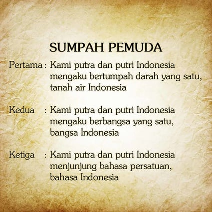

Ketua: Sugondo Djojopuspito (PPPI) Wakil Ketua: R.M. Djoko Marsaid (Jong Java) Sekretaris: Muhammad Yamin (Jong Sumatranen Bond) Bendahara: Amir Sjarifudin (Jong Bataks Bond) Pembantu I: Johan Mahmud Tjaja (Jong Islamieten Bond) Pembantu II: R. Katja Soengkana (Pemoeda Indonesia) Pembantu III: R.C.L. Sendoek (Jong Celebes) Pembantu IV: Johannes Leimena (Jong Ambon) Pembantu V: Mohammad Rochjani Su’ud (Pemoeda Kaoem Betawi)

Sumpah Pemuda menandai meningkatnya kesadaran kebangsaan atau nasionalisme bangsa Indonesia dalam menghadapi penjajahan. Para pemuda yang berasal dari berbagai organisasi kepemudaan dan kelompok pelajar kala itu bersatu untuk menjadi rakyat Indonesia seluruhnya demi kemerdekaan Indonesia. Untuk mewujudkan gagasan tentang persatuan berbagai organisasi, digelar Kongres Pemuda I pada 30 April hingga 2 Mei 1926 yang mempertemukan kelompok pemuda Indonesia skala nasional. Maksud dan tujuan pertemuan itu untuk membahas strategi, serta menyampaikan gagasan terkait cara membebaskan diri dari penjajah. Setelah Kongres Pemuda I, dilanjutkan Kongres Pemuda II pada 27-28 Oktober 1928. Pertemuan ini diselenggarakan di tiga tempat, dengan konsentrasi pembahasan yang berbeda. 
Makna Sumpah Pemuda bagi perjuangan kemerdekaan berarti penting, yaitu menyatukan para pemuda dan seluruh rakyat Indonesia untuk membela tumpah darah yang satu, yaitu Tanah Air.
"Kami Putra dan Putri Indonesia, mengaku bertumpah darah yang satu, tanah air Indonesia." "Kami Putra dan Putri Indonesia, mengaku berbangsa yang satu, bangsa Indonesia." "Kami Putra dan Putri Indonesia, menjunjung bahasa persatuan, bahasa Indonesia."
ujuan Sumpah Pemuda adalah memperkuat rasa persatuan dan kebangsaan Indonesia yang telat tumbuh di dalam benak dan sanubari pemuda-pemudi, seperti dikutip dari laman Museum Sumpah Pemuda. Sumpah Pemuda bertujuan membangkitkan jiwa nasionalisme dan memperkuat rasa persatuan dan kesatuan bangsa Indonesia.